Префектура Гифу · Такаяма · ремёсла
Мингэй Хида-Такаямы: старый дом мастеров, тряпичные рыбы и снежный ёкай из обрезков
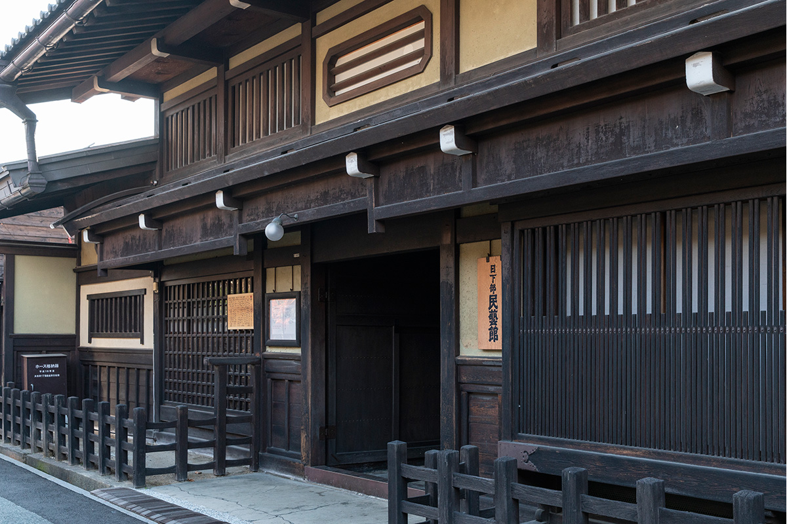
Из поездки хочется привезти вещь, которую сделали в том же краю. В Хида-Такаяме, горном городе со старыми кварталами, мингэй, народное ремесло, выглядит неожиданно свободным: тряпичные рыбы с отпечатанной чешуёй, черпаки из магнолии и одноглазый снежный ёкай из обрезков дерева.
Взгляд
Мингэй, который похож на народное искусство
Хида-Такаяму окружают высокие горы, в городе много старых домов, и иностранных туристов здесь всегда много. С деревом в этом крае работают больше 1300 лет. Местных плотников и резчиков называют «мастерами Хиды», и в 2016 году их ремесло и его история получили статус японского наследия. Их работа видна и в старых кварталах эпохи Эдо, и в праздничных повозках фестиваля Такаяма, который проходит весной и осенью.
Наш проводник по местному мингэю, байер и куратор, впервые приехал в Такаяму школьником: здесь училась гончарному делу его старшая сестра. Потом он долго здесь не бывал, а с 2018 года стал ездить в город постоянно, преподавать в «Практической школе ремёсел Хида-Такаямы».
«Такаяму я с мингэем особенно не связывал. Но уже взрослым зашёл в музей Кусакабэ, и он меня поразил. Дом признан важным культурным достоянием страны, и в каждой его детали видно руку мастеров Хиды. А внутри, конечно, множество народных вещей»
байер и куратор
По его словам, народные вещи по своей природе очень свободны, а мингэй Такаямы ближе к народному искусству, чем к деревенскому быту. Лучший пример, по его словам, это тряпичные игрушки «Синкогэй», о которых ниже.
Музей
Кусакабэ мингэйкан: дом, который построили мастера Хиды
Музей народного искусства Кусакабэ занимает дом купеческой семьи Кусакабэ, внесённый в список важного культурного достояния страны. Его построил в 1879 году известный плотник эпохи Мэйдзи, потомок династии Мацуда, которая строила в Хиде в эпохи Эдо и Мэйдзи. Дом считают вершиной городской архитектуры местных мастеров: он сохранил строительные приёмы эпохи Эдо, а в 1966 году открылся как музей.
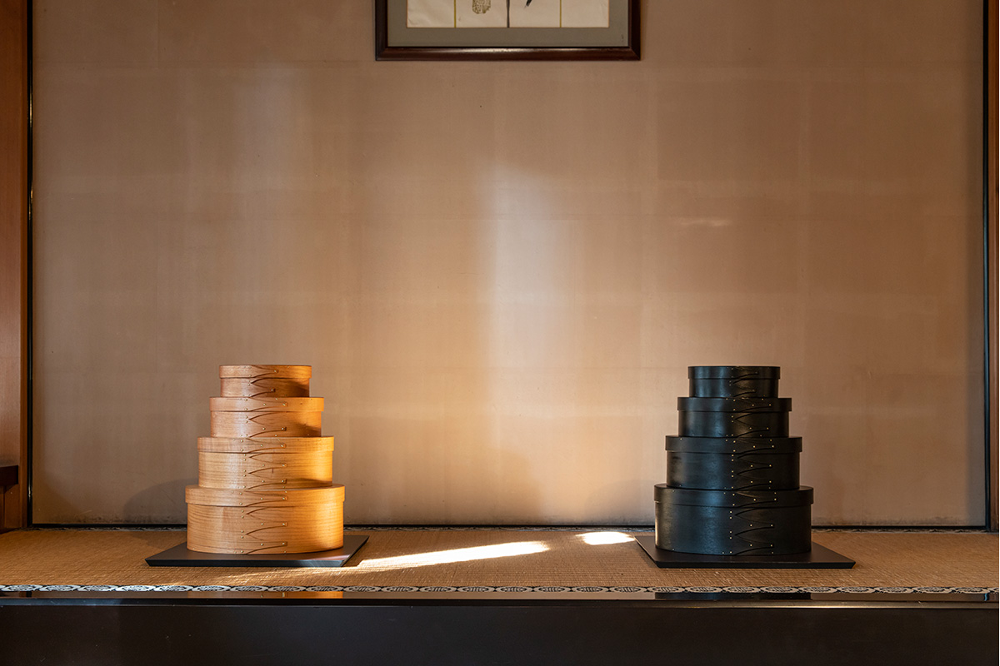
Главное впечатление здесь производит высокий зал без потолка: над ним идут мощные балки, и их держит центральный столб. Такую конструкцию называют мужественной. В комнатах выставлены старинная керамика Хиды, свадебные паланкины и другие народные вещи. Есть в доме и роскошный домашний алтарь с потайными механизмами: он уцелел в большом пожаре 1875 года, и в Такаяме его считают местом силы.
Музей народного искусства Кусакабэ
- Адрес
- префектура Гифу, Такаяма, Осин-мати, 1-52
- Телефон
- +81 577-32-0072
- Часы работы
- март–ноябрь 9:00–16:30, декабрь–февраль 9:00–16:00, с 29 декабря по 3 января 10:00–15:00
- Выходные
- март–ноябрь без выходных, декабрь–февраль вторник, в январе бывают дополнительные выходные
- Цены / Вход
- взрослые 500 иен, школьники 300 иен, дошкольники бесплатно
Выставка
Новые мастера в старом доме
Три года в Такаяме работала «Практическая школа ремёсел Хида-Такаямы», и в конце 2020 года её участники показали свои работы в музее Кусакабэ, на выставке «Со, со, со» («Мысль, созидание, убранство»). Вещи расставили по комнатам дома, и современные работы спокойно выдержали соседство с его тяжёлыми балками. В январе и феврале 2021 года выставку показали и продавали в Токио.
Маска ханнья в технике ити-иттобори
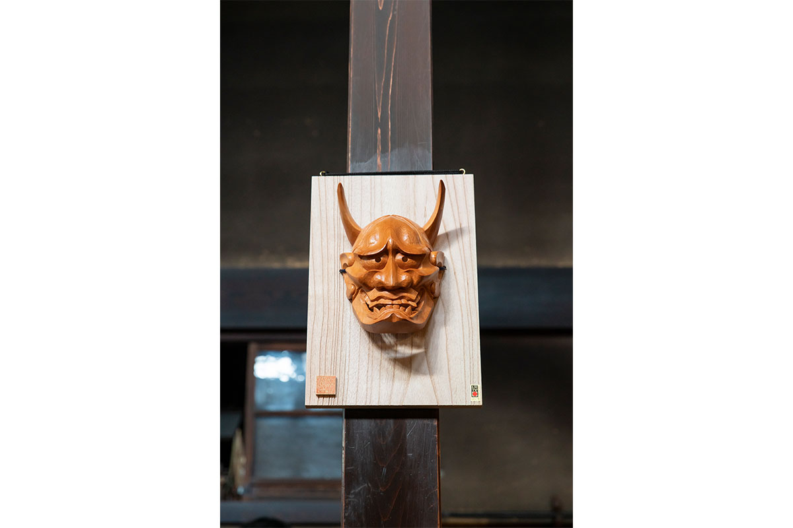
На массивном столбе высокого зала повесили маску ханнья, ревнивой демоницы из театра но. Её вырезал местный мастер по дереву в технике Хида-ити-иттобори: резьбы из тиса, которая признана традиционным ремеслом Японии. Хорошие резчики были в Такаяме во все времена, начиная с Рётё Мацуды (1799–1871). Маска выглядит грозно, но рядом с ней почему-то становится спокойно. Подробнее о технике мы рассказываем в статье о резьбе ити-иттобори.
«Ноктарэ»: криптомерия, ваза и табурет
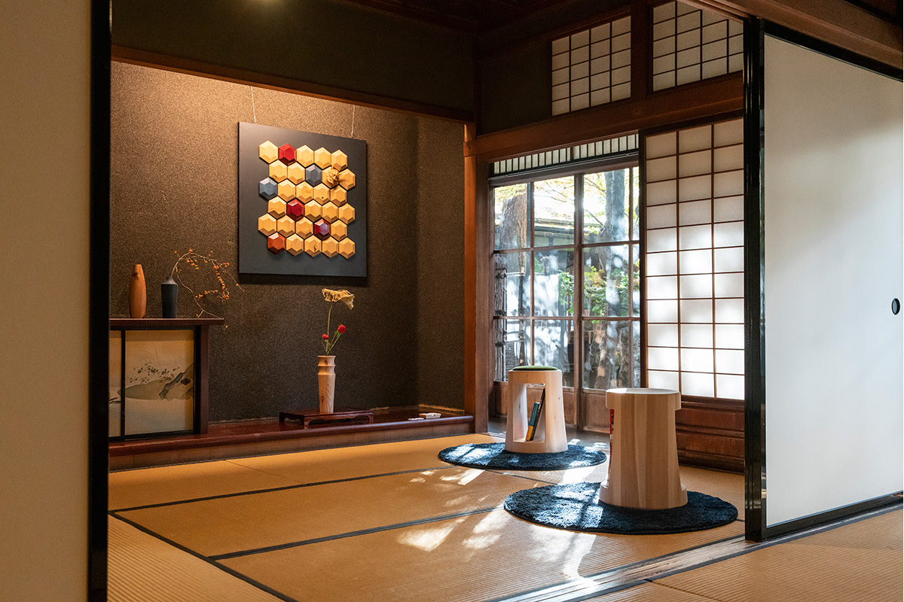
В комнате, где сквозь бумажные сёдзи падает мягкий свет, стояли вещи «Ноктарэ». Мастерская в основном выполняет заказы на деревянные детали, мелкие предметы и мебель. Ваза из криптомерии выточена на токарном станке, у неё красивая гладкая поверхность, а модель под лаком хида-сюнкэй соединяет западное и японское. Табурет ceppo тоже из криптомерии: так мастерская отвечает на проблемы местного лесного хозяйства. На вид он тяжёлый, а на деле лёгкий. Внутри он полый, поэтому годится и как приставной столик, и как переносная полка.
ARTS CRAFT JAPAN: разделочные доски
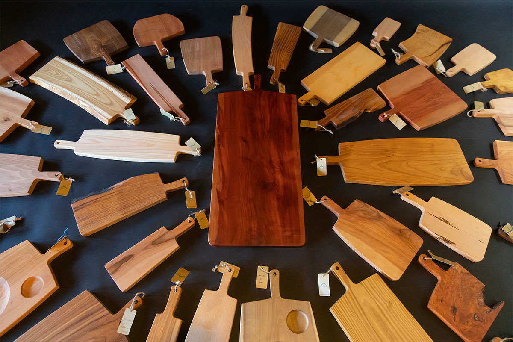
В одной из комнат собрали разделочные доски ARTS CRAFT JAPAN из лиственных пород префектуры Гифу. Темы мастерской: «местное для местных» и «единственный экземпляр». Доски нарочно не выравнивают до конца: ширину и форму подбирают по куску дерева, иногда оставляя край с корой. Тёмные доски, доски с сучками и необычным рисунком напоминают, что дерево живое и такое же разное, как люди. Покрывают их натуральным маслом перилы, которое в Хиде продают даже на придорожных станциях. Подробнее о мастерской рассказано в статье о дереве Хида-Такаямы.
«Сираюри кобо»: кубики TSUMIBOBO
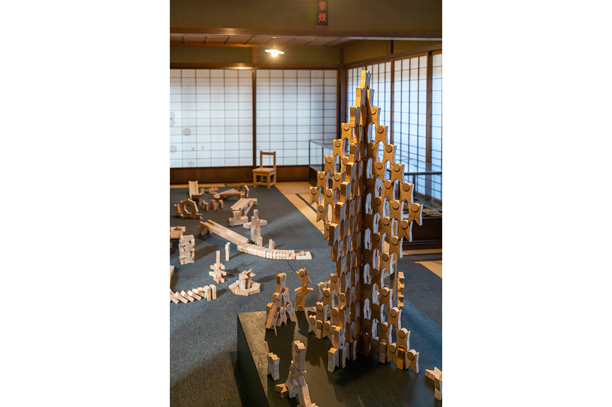
В комнате с видом на улицу, где лежат старые домашние вещи, показали TSUMIBOBO. Эти кубики много лет придумывал глава второго поколения мастерской «Сираюри кобо», основанной в 1982 году. Тело фигурки из криптомерии, голова из клёна с гор Хиды. Форма у кубиков необычная, но их можно ставить друг на друга самым смелым образом, и башня не упадёт. Посетители садились на татами и бережно перебирали фигурки в руках.
«Сибукуса Рюдзо-гама»: керамические bobo
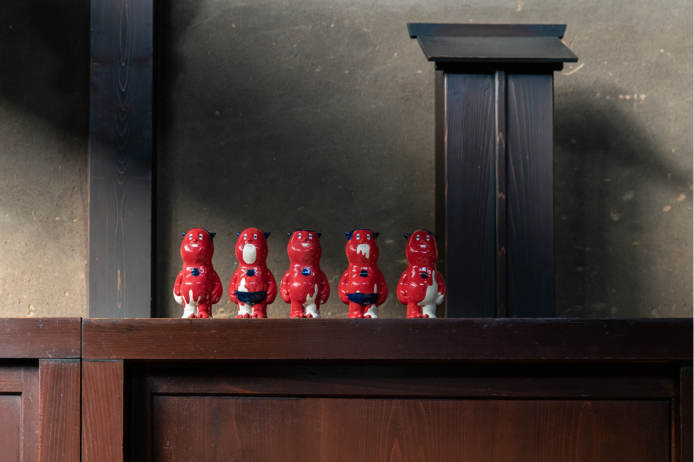
На отполированном до медового цвета кухонном шкафу, среди старой утвари, стояли фигурки bobo, как будто они всегда тут жили. Основой стала сарубобо, народная кукла Хиды, а мастера печи годами изучали гончарный круг и глазури и создали из неё нового персонажа Такаямы. Фигурки пухлые и тёплые на ощупь. Их расписывают и старинными узорами, и своими, и в них сходятся народное ремесло, прикладное искусство и современный дизайн.
«Мару когэй»: овальные коробки
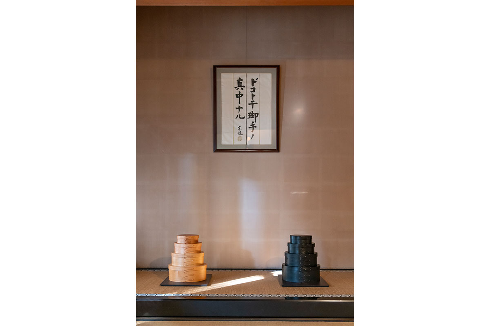
Овальную коробку «Мару когэй» придумали по образцу коробок для инструментов американской общины шейкеров и приспособили к японскому быту. На выставке пары коробок разного цвета симметрично поставили в нишу токонома под свиток Соэцу Янаги (1889–1961), философа, который в 1920-х годах дал народному ремеслу имя «мингэй» и основал это движение. Мастер «Мару когэй» входит в число самых известных в стране ремесленников Такаямы. В токийских магазинах его коробки раскупают сразу после поставки.
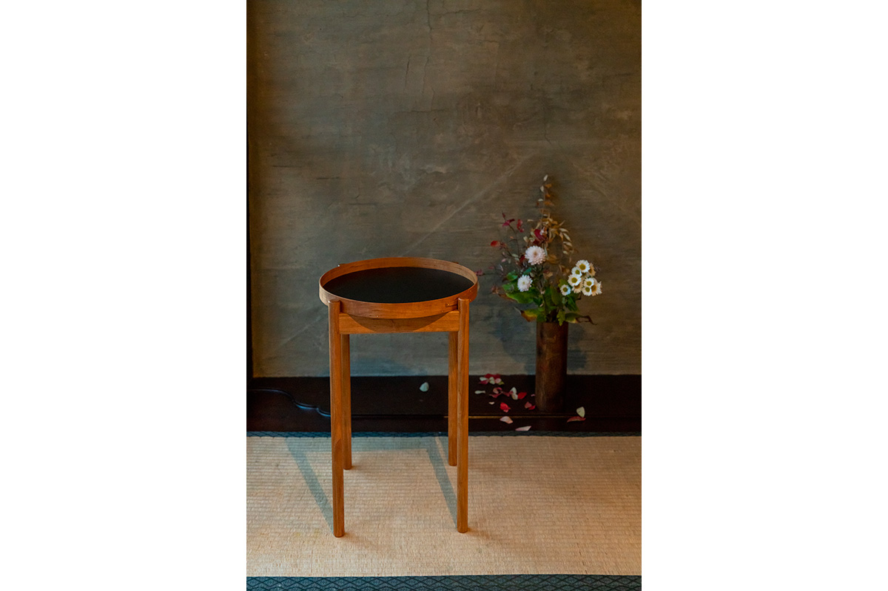
«Буцудан когэй Хорио»: алтари и скейтборд
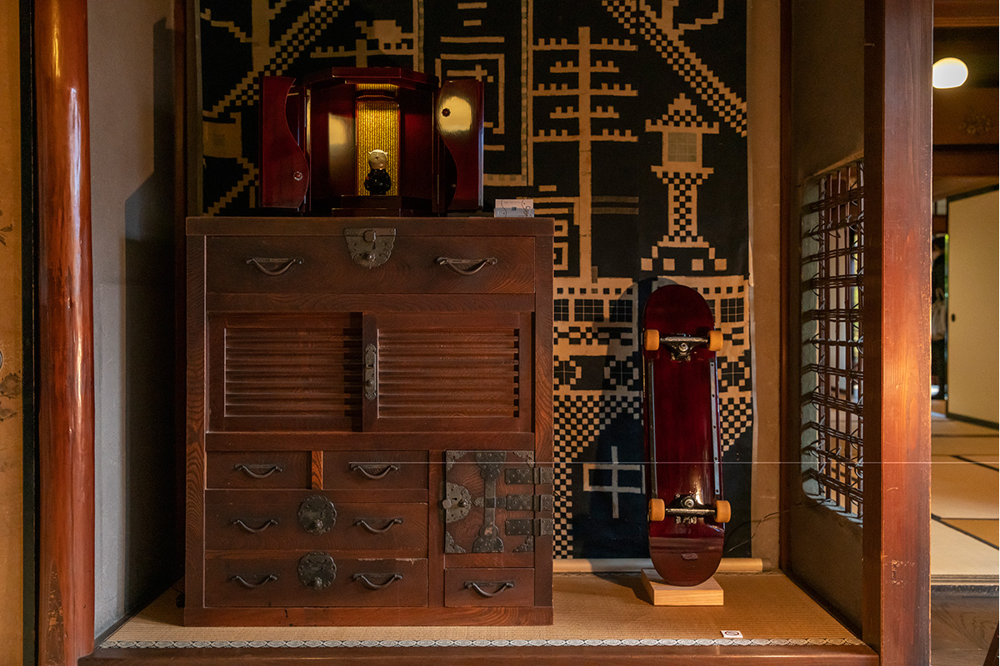
Домашний буддийский алтарь собирает в себе сразу несколько ремёсел: основу, лак, позолоту, металл и сборку. Мастерская «Буцудан когэй Хорио» делает алтари около ста лет, а её глава в третьем поколении раньше был профессиональным сноубордистом. Его алтари поставили в полутёмной тёплой комнате, какие бывают в домах снежного края, вместе с фигурками bobo. Скейтборд под лаком хида-сюнкэй стал символом мастерской: старый материал на новом предмете неожиданно хорошо смотрится.
Мастерская
«Окуи моккося»: черпаки и снежный ёкай
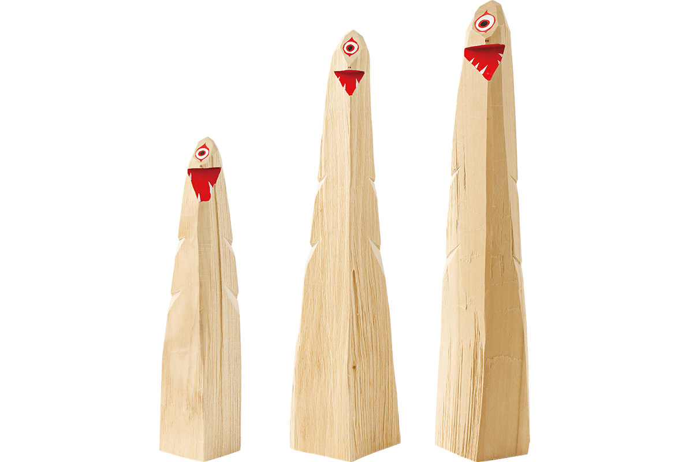
Деревянные вещи мастерской «Окуи моккося» наш проводник называет теми, в которых чувствуется сама Хида. Много лет мастерская делает черпаки, которые эссеистка Масако Сирасу (1910–1998), знаток японских ремёсел, назвала «королём черпаков». В основе лежит старинный черпак удо, известный с эпохи Эдо, а мастер его улучшил. Материал, японская магнолия хоноки, обладает антибактериальными свойствами, легко поддаётся обработке и служит долго.
«Листья магнолии используют в местной кухне, например в хоба-мисо. Люди раньше знали, чем полезен материал, это была житейская мудрость»
байер и куратор
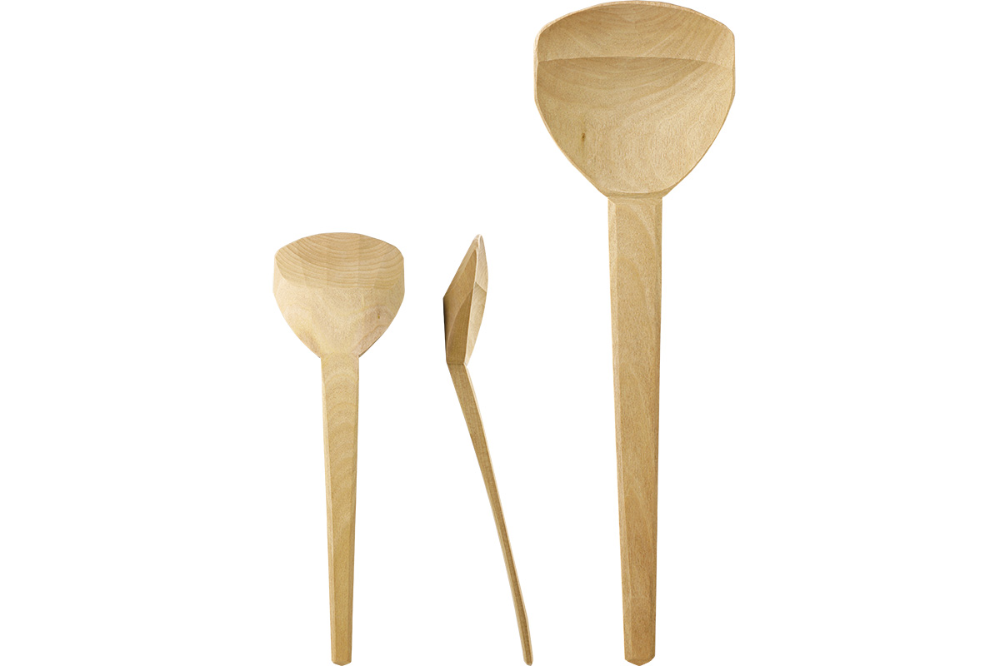
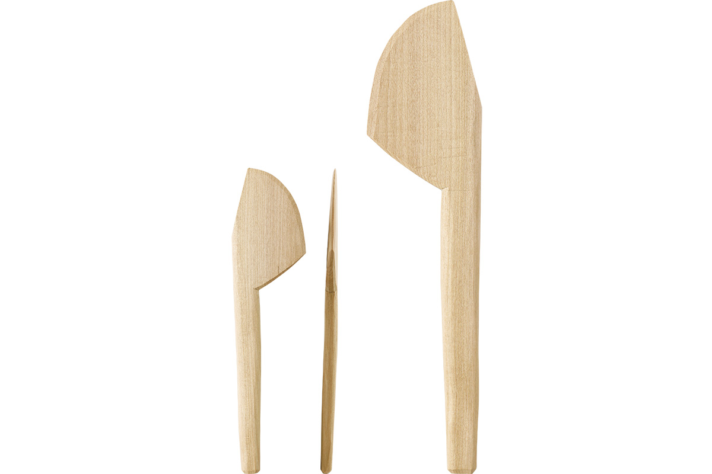
Лопаткой «Хида-но осэккай» можно работать и изогнутой частью, и спинкой, и она удобна, когда печёшь сладости. А из обрезков, которые остаются от черпаков, появилась фигурка «Хида-но юки-нюдо». Юки-нюдо это ёкай снежных краёв: он показывается перед рассветом на следующий день после снегопада и, по поверью, уводит в лес непослушных детей. Фигурке приписывают и силу оберега.
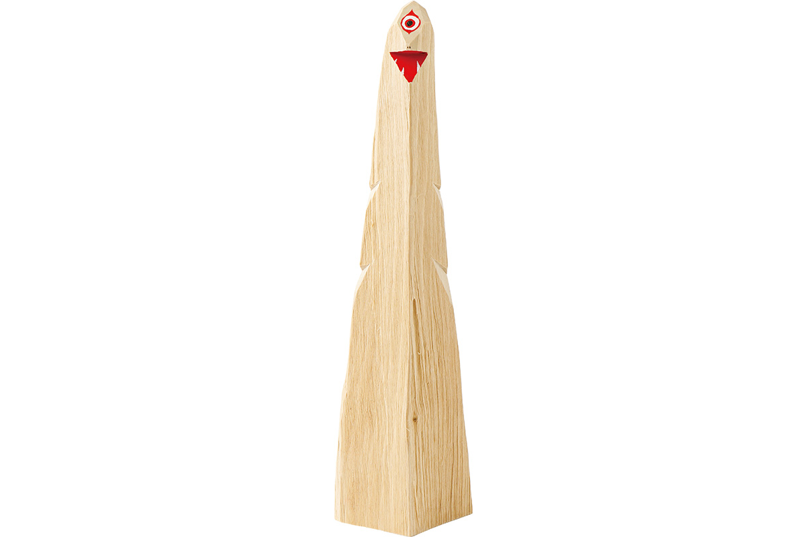
«Это моя личная фантазия, но они напоминают мне будд Энку, которых много в храмах Такаямы»
байер и куратор
Энку (1632–1695) был странствующим монахом, который вырезал тысячи статуй будд, и о нём рассказывает наша статья о буддах Энку. Двух одинаковых юки-нюдо не бывает, и многие покупают их снова и снова, чтобы собрать разные лица. Мастер делает их у себя дома, в мастерской, из сырой древесины магнолии.
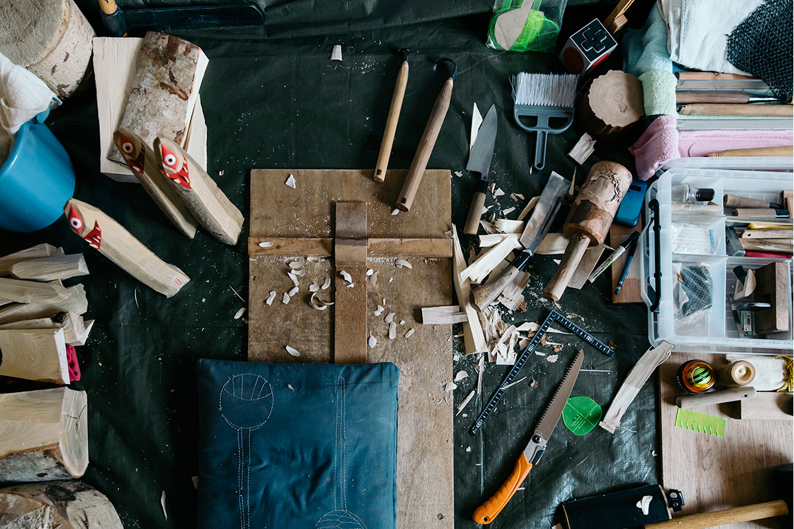
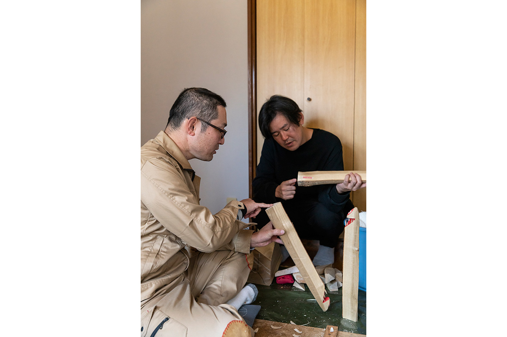
О самой мастерской подробнее в статье о дереве Хида-Такаямы. Купить её вещи можно, например, в лавке «Яваия».
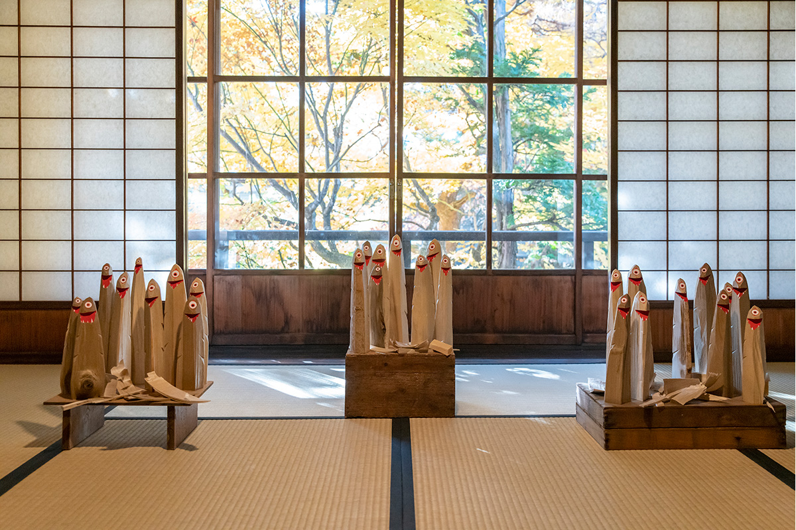
Игрушки
«Синкогэй»: рыбы и птицы с отпечатанным узором
Главный магазин «Синкогэй» стоит в 10 минутах пешком от станции Такаяма, рядом с Такаяма-дзинъя, бывшей резиденцией наместника эпохи Эдо. На полках множество ярких мягких игрушек. Их делают в технике печати с деревянных досок: краску наносят на доску и отпечатывают на сырой хлопок, ткань пропаривают при высокой температуре, чтобы закрепить цвет, затем набивают рисовой шелухой и зашивают.
«Придумать свой способ печати по ткани, а потом превратить отпечаток в объёмную игрушку: это замечательная идея. Мои любимые рыбы и птицы, они живые и милые. И мне нравится, как игрушки лежат в бамбуковых корзинах»
байер и куратор
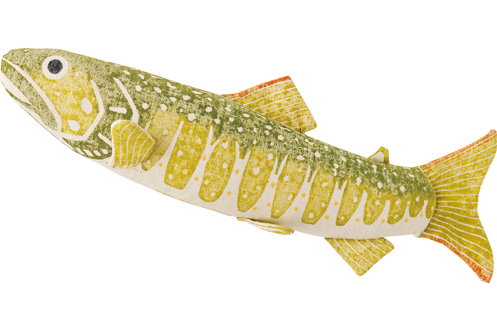
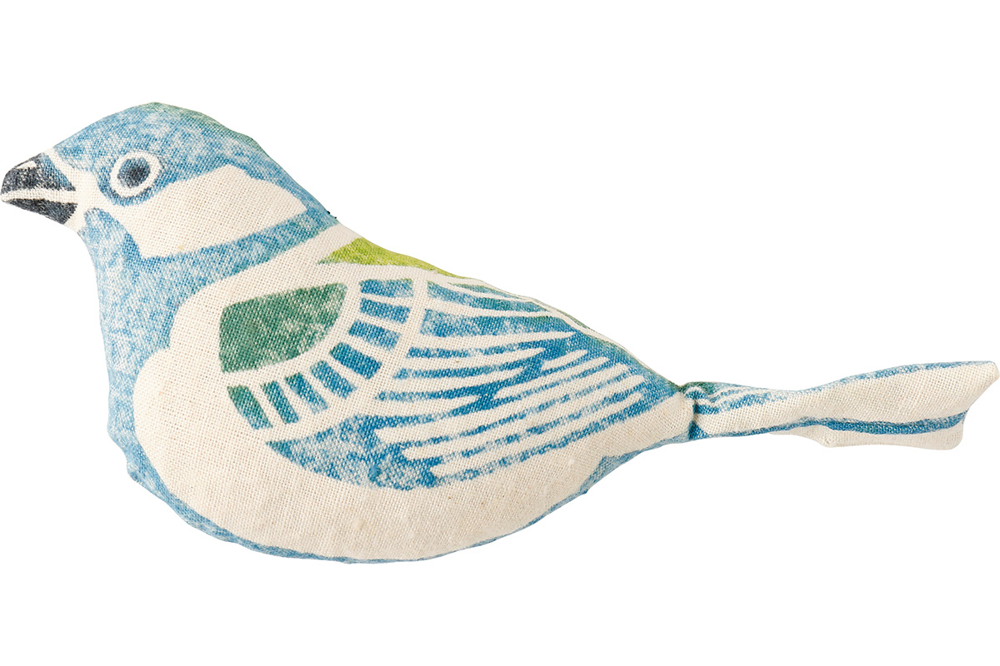
Самая популярная серия «Синкогэй» это животные года по восточному календарю.
«Синкогэй», главный магазин
- Адрес
- префектура Гифу, Такаяма, Хаккэн-мати, 1-86
- Телефон
- +81 577-32-1750
- Часы работы
- 10:00–17:00
- Выходные
- вторник
Лавка
«Яваия»: дом из деревни и вещи для жизни
Самой настоящей лавкой мингэй наш проводник называет «Яваия», она стоит в маленькой деревне в горах. Хозяин перенёс туда старый дом, которому около 150 лет, и продаёт в нём посуду и вещи для дома со всей страны. Под крышей устроен букинистический магазин с книгами, которые он выбрал сам, а время от времени здесь проходят выставки мастеров.
«Если приехать в „Яваия“, начинаешь чувствовать, чем хорош этот край. В поездке хочется купить то, что сделано на месте, и эта лавка с этим справляется»
байер и куратор
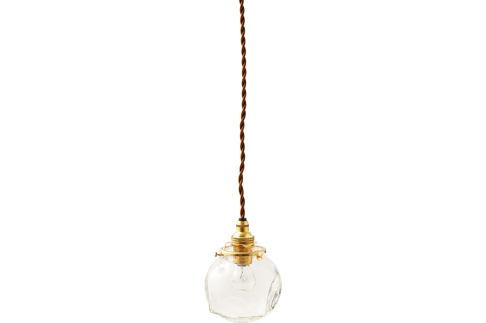
Здесь продают все модели подвесных светильников стеклодува из Такаямы, за работами которого стоит следить. На сайте лавки каждый светильник показан включённым и выключенным, и выбирать по фотографиям удобно.
«Яваия»
- Адрес
- префектура Гифу, Такаяма, Кокуфу-тё, Уцуэ, 1372-2
- Телефон
- +81 577-77-9574
- Часы работы
- 13:00–17:00, в субботу, воскресенье и праздники 11:00–17:00
- Выходные
- среда–пятница
- Сайт
- yawaiya.com
Маршрут
Два дня с мингэем
Наш проводник предложил маршрут на два дня.
День первый. От станции Такаяма 15 минут пешком до музея Кусакабэ, оттуда 14 минут пешком до магазина «Синкогэй». Затем 11 минут на машине до «Оберж Хида-но мори», где ночуют.
День второй. От «Оберж Хида-но мори» 25 минут на машине до городка Хида-Фурукава, о котором рассказывает статья о рёкане «Яцусанкан». Через 12 минут на машине обед в столовой «Кунихати сёкудо», и ещё через 12 минут лавка «Яваия».
«Оберж Хида-но мори»
- Адрес
- префектура Гифу, Такаяма, Сингу-мати, 3349-1
- Телефон
- +81 577-34-6575
- Цены / Вход
- ночь с ужином и завтраком от 12 900 иен с налогом и сервисным сбором
Оберж стоит среди леса. Здесь подают итальянскую кухню из сезонных продуктов и вино, а днём можно гулять по окрестностям и просто отдыхать.
Фото: Норихито Судзуки, Кадзуя Хаяси.